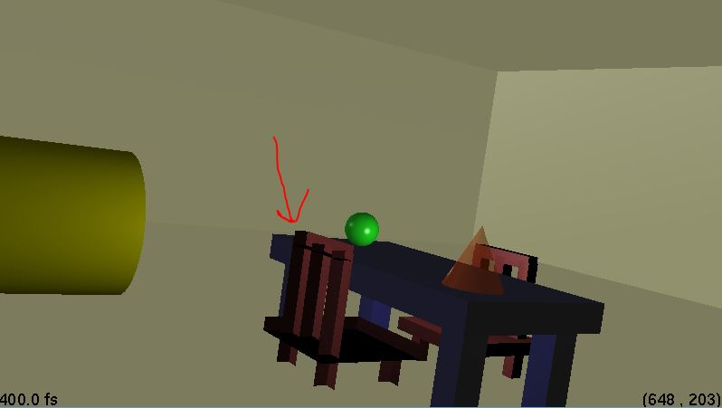
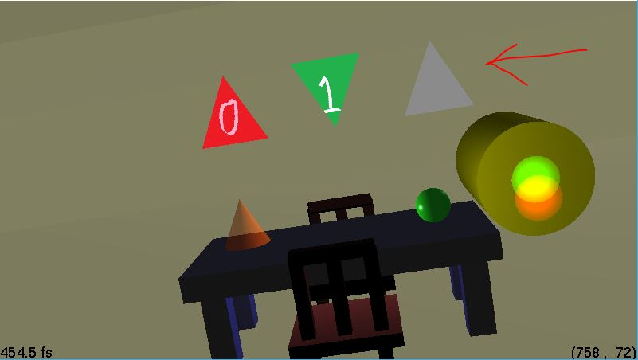

Computer Graphics Assignment 3
- Matt Richard
- mricha56
- Microsoft Visual Studio for development / compilation
- Used 0 late days
Implementation
Implemented everything except:
- Anti-aliasing
- In .ray file (Again, I did not implement these):
- Luxo Jr. lamp
- Mirror
- Shadows
- Testing for identical material indices to reduce calls to glMaterial*
- Custom GLSL shaders
The object that responds to user mouse clicks is the green sphere resting on the table. Clicking on it randomizes the color of the first light in the scene. The code that does this is in RayTraceFunction in rayWindow.cpp.
To ray-trace the scene, right click and select Ray Trace. Since I never implemented cone, cylinder, or box intersections for Assignment 2, only spheres and triangles will be visible. Click once to stop displaying the ray-traced image.
The top-level of my scene is defined in scene.ray. You can run my program with the following command:
./Assignment3 --in scene.ray --width 800 --height 450 --cplx 100
Bugs
The code still contains a few bugs. I tried my best to resolve these but ended up running out of time.
Rotated Objects Appear "Inside Out"
I suspect this is due to object normals not rotating along with the object during ModelView transformation.
See the below image. This only seems to result when an object's transformation specifies a rotation.

Third Triangle in Scene Does Not Appear Textured
As far as I can tell, triangles.ray is correct syntax-wise and tex2.bmp is a valid texture. While tex0.bmp and tex1.bmp display correctly, tex2.bmp does not display correctly on the third triangle in my scene.

Specular Flickering
Rotating the scene seems to result in the table and other box objects flickering white on occasion.